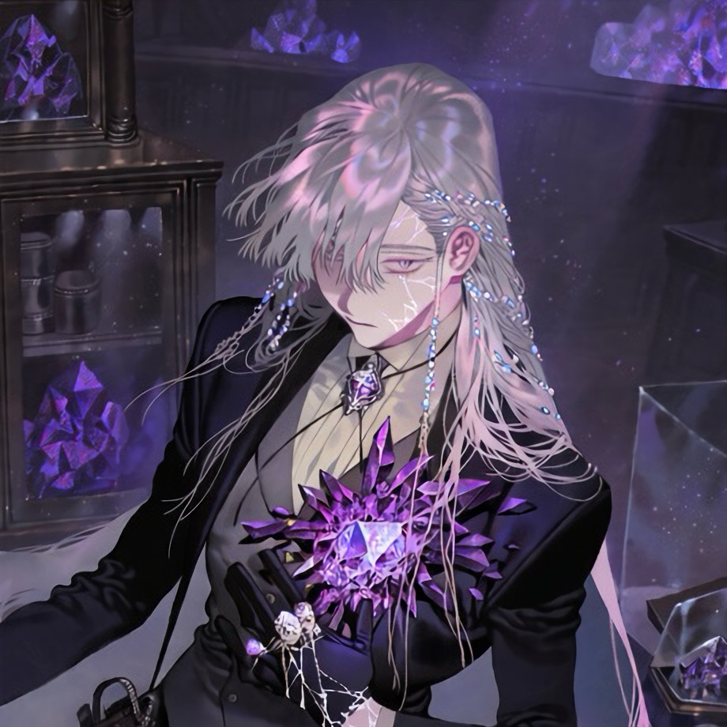

CHARACTER RECORD / 038STATUS: AVAILABLE

✦IMAGE
NOT FOUND
NOT FOUND
クラーグ
✦ WITH OUTFIT服装込み
PROMPT DATATXT / 038
masterpiece, best quality, ultra detailed, 1boy, adult male, humanoid mineral entity, tall slender build, elegant elongated limbs, translucent pale skin with a faint crystalline sheen, 1.5::intricate cracks spreading across the face, neck, hands and exposed skin::, 1.4::glowing gemstones embedded beneath the fractured skin::, jagged amethyst crystals emerging from the collarbone, tiny sapphire fragments embedded along the temples, translucent crystal shards growing from the fingertips, large multifaceted violet gemstone embedded in the center of the chest, luminous fractures revealing crystalline structures beneath the skin, thin well-defined eyebrows, narrow pale lavender eyes, crystalline irises, emotionless expression, delicate facial features, pointed chin, long silver-white hair with muted lavender undertones, layered wispy bangs, loose strands framing the face, a few tiny crystal beads braided into the hair, subtle mineral inclusions beneath the skin, faint iridescent reflections,
1.4::dark gemstone specimen collector aesthetic::, high-collared black Victorian research coat, asymmetrical coat tails, fitted charcoal waistcoat, ivory shirt, thin black cravat secured with a faceted amethyst brooch, silver chain accessories, delicate leather harness crossing the torso, transparent specimen vials attached to the belt, small glass capsules containing mineral fragments, embroidered geological diagrams on the coat lining, black gloves with exposed fingertips, silver rings holding tiny gemstones, fitted dark trousers, polished black ankle boots, antique specimen case strapped to one hip, intricate metal clasps, restrained gothic elegance, black, smoky violet, sapphire blue and antique silver palette,
PROMPT NOT ENTERED